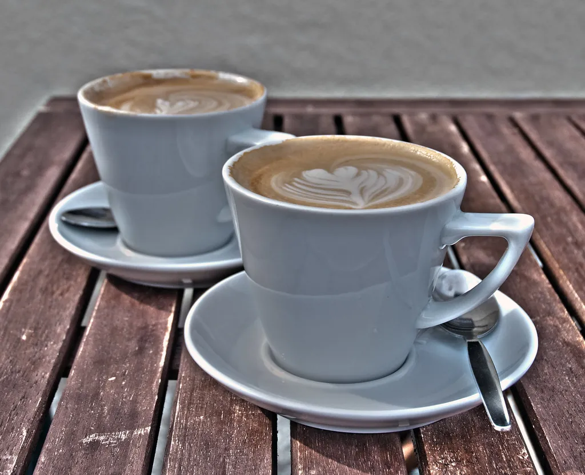
Desayuno en el porche
Pan de payés, embutidos de Olot, huevos de nuestras gallinas y mermeladas caseras.
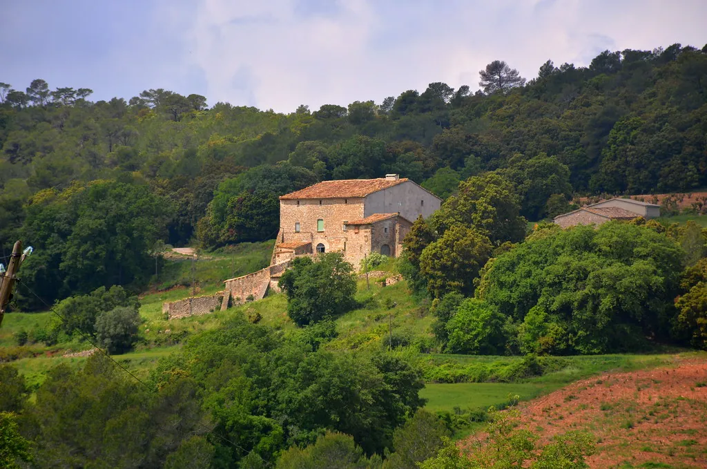
Hotel rural · Garrotxa, Girona
Ocho habitaciones en una casa de piedra de 1682, entre volcanes dormidos y bosques de hayas. Desayuno del huerto y silencio de verdad.
Bienvenidos a la GarrotxaLa masía
El Mas de l'Alzina fue una casa de payeses durante trescientos años. En 2014 la familia Puigdemasa la rehabilitó piedra a piedra, respetando las vigas, los muros de un metro y el gran encino que le da nombre.
Hoy tiene ocho habitaciones, un comedor con chimenea, piscina de agua salada y catorce hectáreas de prados y bosque. Cocinamos con lo que da el huerto y con los productores de la comarca.
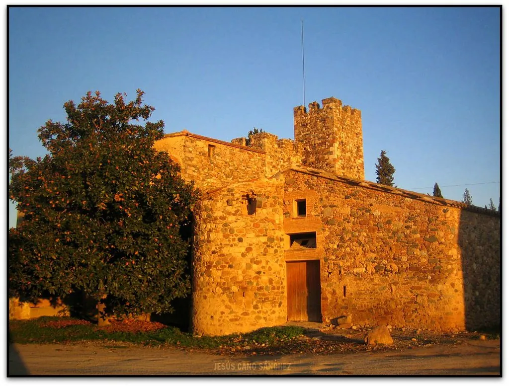
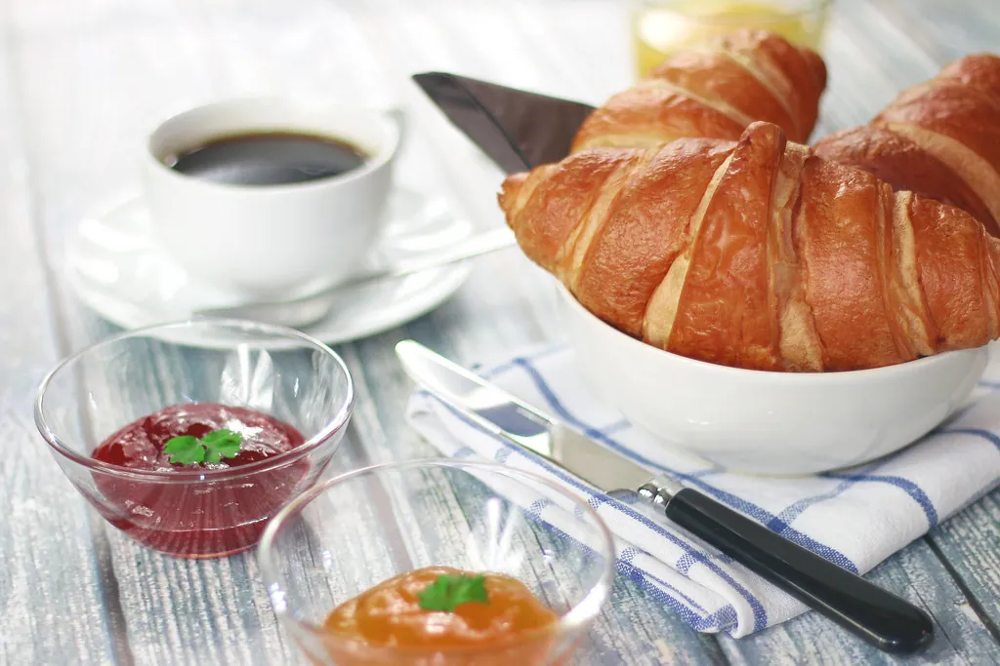
Abre la ventana de tu habitación y esto es lo que verás…
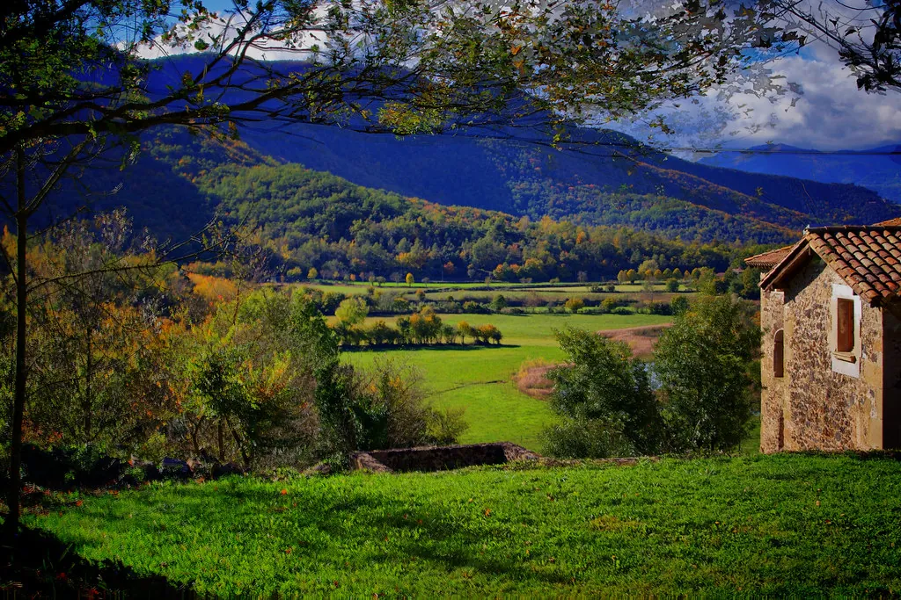
Buenos días
Habitaciones
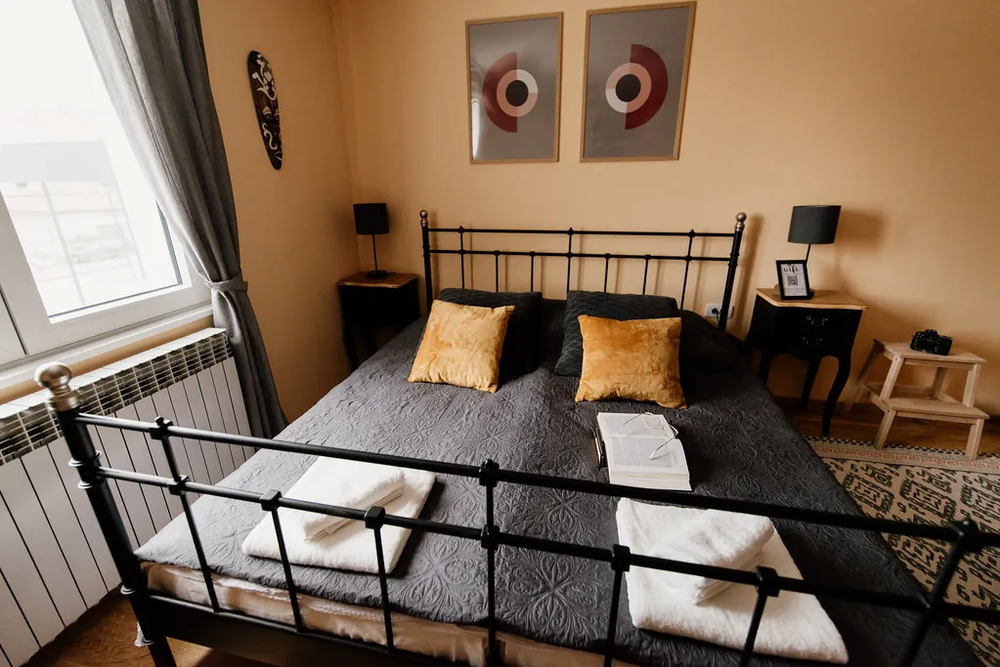
3 habitacionesLa más recogida de la casa, con ventana al huerto y una cama de forja que nos regaló la abuela del vecino.
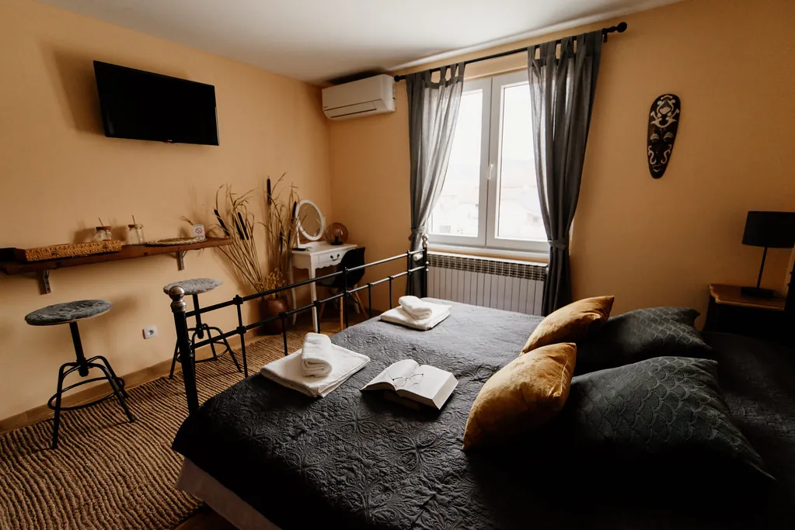
2 habitacionesCon balcón hacia el bosque de hayas. Admite una cama supletoria para un niño o un tercer adulto.
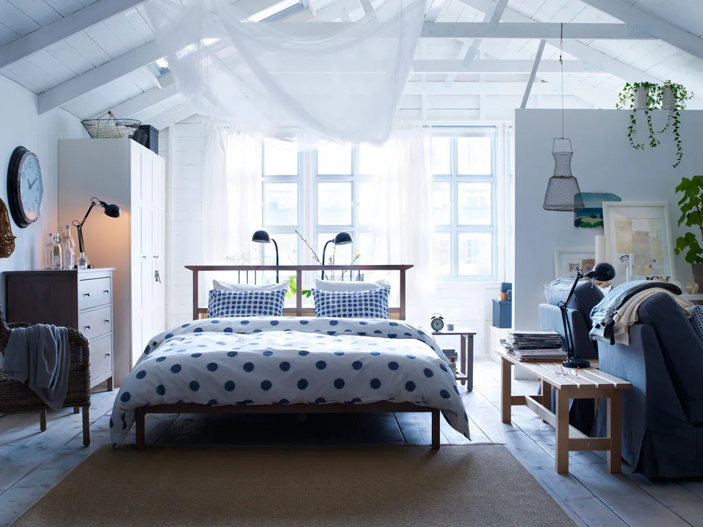
2 habitacionesLa buhardilla bajo las vigas originales, con zona de estar y un altillo para los niños.
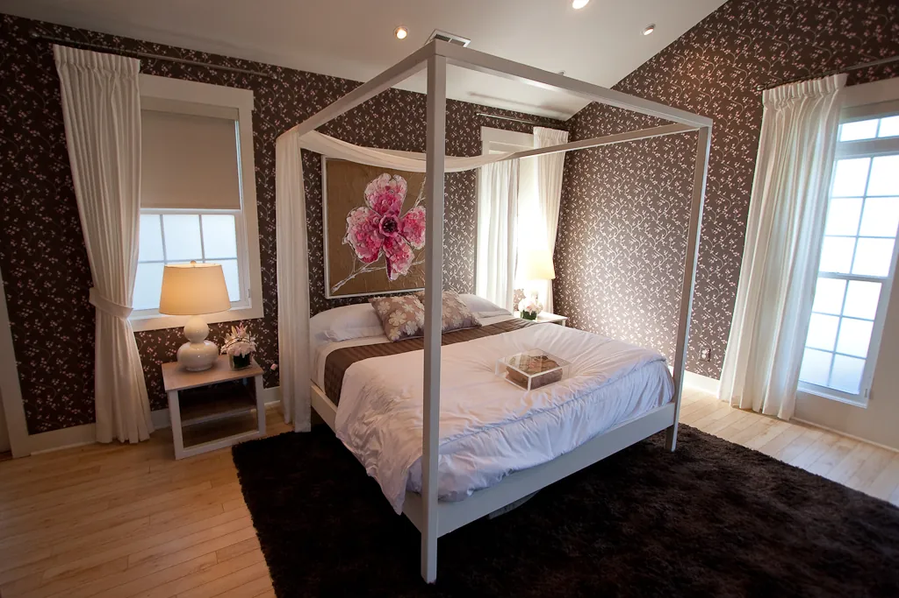
1 habitaciónNuestra suite, con cama con dosel, chimenea propia y una bañera exenta frente a la ventana.
Un día en la masía

Pan de payés, embutidos de Olot, huevos de nuestras gallinas y mermeladas caseras.

El hayedo más famoso de Cataluña está a 12 minutos. Te dejamos el mapa y el termo.
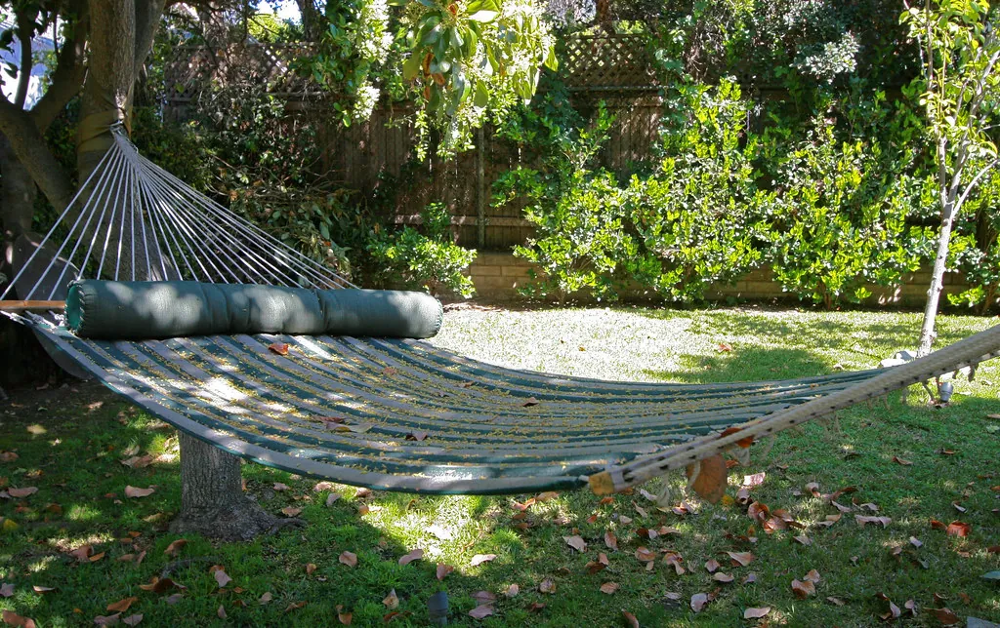
Hamacas bajo el encino y piscina de agua salada con vistas al valle.
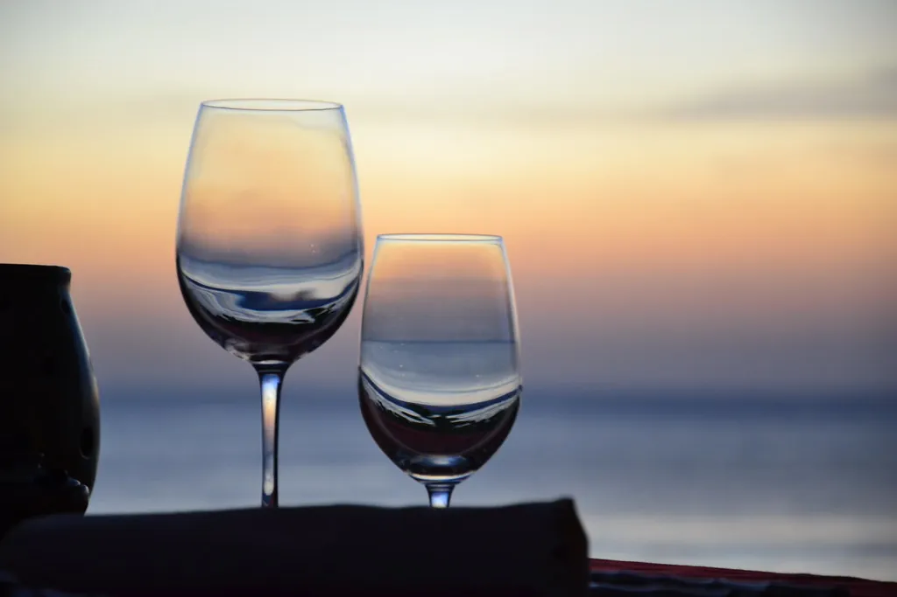
Cocina volcánica: patatas de Olot, fesols de Santa Pau y vinos del Empordà.
El entorno
Opiniones
★★★★★«Nos despertamos con la niebla subiendo por el valle. El desayuno, de los mejores que hemos tenido nunca.»
★★★★★«Fuimos con los niños a la buhardilla y no querían volver. Las gallinas y la piscina fueron un éxito.»
★★★★★«La suite con la chimenea encendida y la bañera mirando al bosque. Volveremos en invierno.»
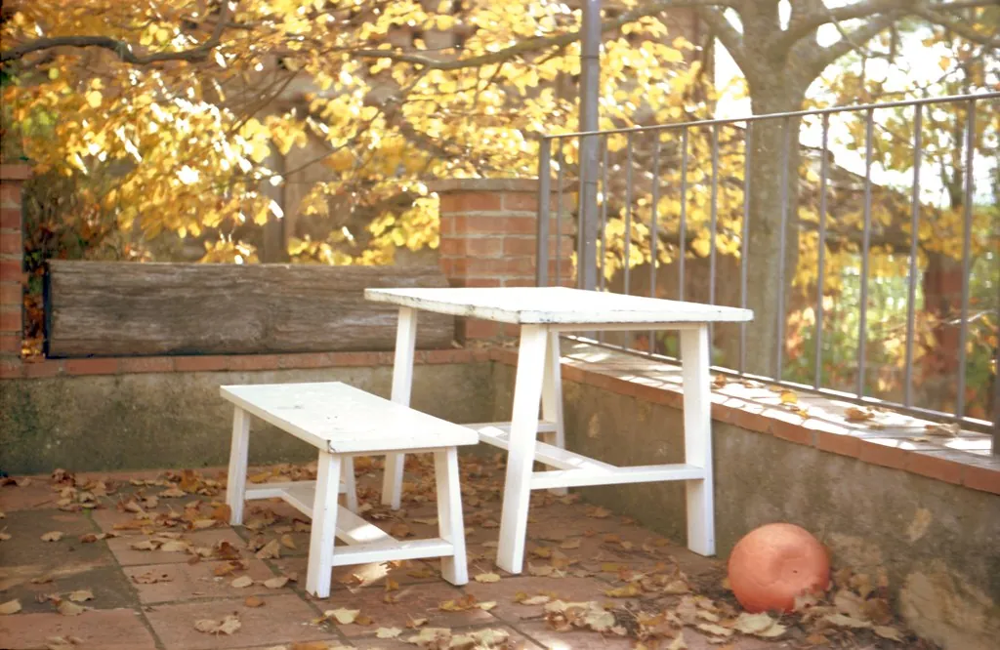
Reserva directa
Reservando en nuestra web tienes el desayuno de bienvenida incluido y la cancelación gratuita hasta 7 días antes.
Ver disponibilidad →